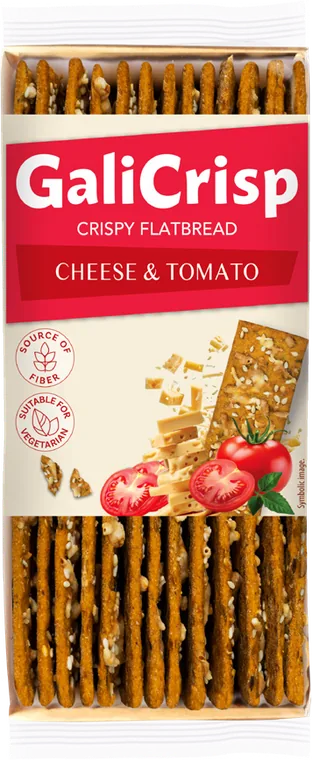

Pieczywka chrupkie w 6 smakach
Długie, cienkie pieczywka 130 g. Sześć smaków w jednej spójnej linii: od 3 ziaren z solą morską po sezam z burakiem.
Pieczywka to cienkie, płaskie pieczywo chrupkie w opakowaniu 130 g. Mają delikatniejszą strukturę niż klasyczna kromka i sprawdzają się jako przekąska prosto z opakowania, do serów, past i dipów.
Linia jest dostępna pod marką GaliCrisp oraz jako private label. Jednostronny karton ekspozycyjny mieści 11 opakowań, a paleta 2376 sztuk, co ułatwia wejście na półkę i w promocje.
Pieczywka 130 g
Długie, cienkie i chrupiące. Sześć smaków w jednej spójnej linii dla handlu detalicznego, eksportu i private label.

Sezam i burak

Pomidor i bazylia

Ser i pomidor

Ser i cebula
Potrójny ser
Dane logistyczne
| Typ kartonu | Wymiary kartonu (S × W × D) | Szt. w kartonie | Kartony na warstwie | Warstwy na palecie | Kartony na palecie | Szt. na palecie | Wysokość palety | Termin przydatności |
|---|---|---|---|---|---|---|---|---|
| ekspozycja jednostronna | 85 × 190 × 398 mm | 11 | 27 | 8 | 216 | 2376 | 1,80 m | 360 dni |
Najczęstsze pytania
Czym pieczywka różnią się od pieczywa chrupkiego?
Są cieńsze, dłuższe i delikatniejsze niż klasyczna kromka. Lepiej sprawdzają się jako przekąska i dodatek do deski serów.
Ile smaków mają pieczywka?
Sześć: 3 ziarna i sól morska, sezam i burak, pomidor i bazylia, ser i pomidor, ser i cebula oraz potrójny ser.
Pozostałe kategorie


Chcesz sprawdzić ten produkt na swojej półce?
Wyślij zapytanie. Odpowiemy z ofertą, specyfikacją i terminem wysyłki próbek.